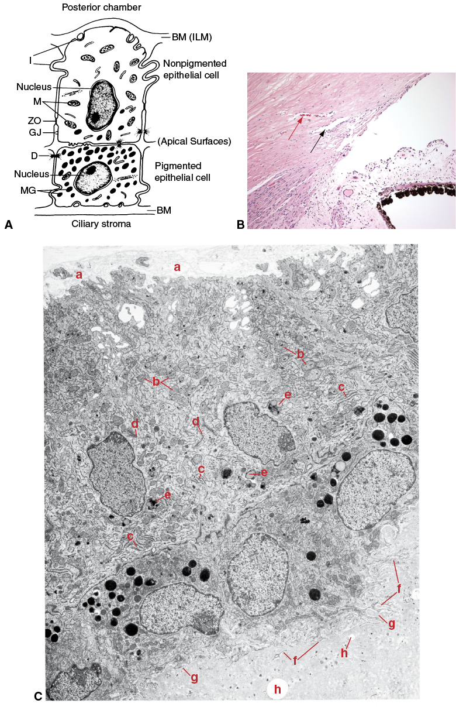
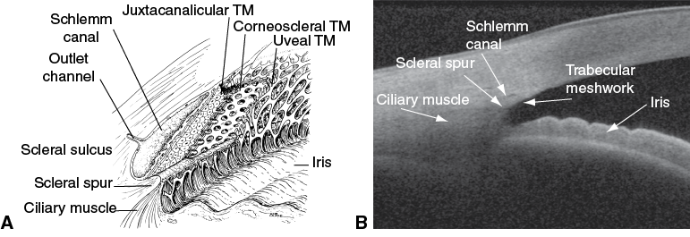
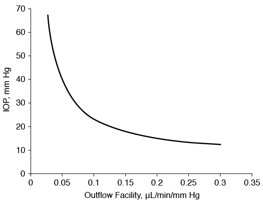
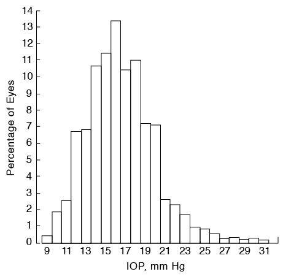
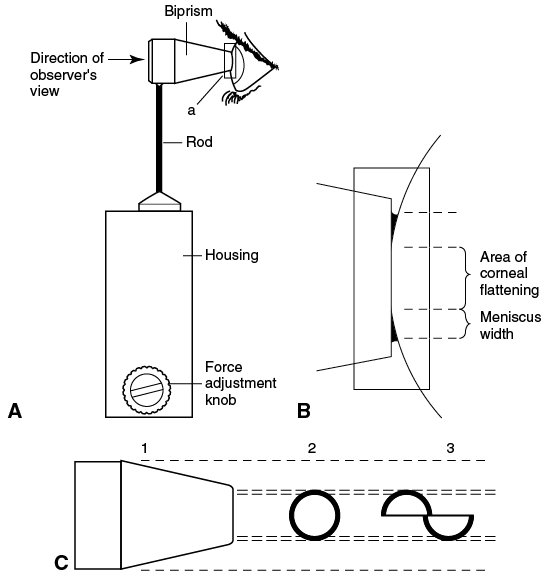
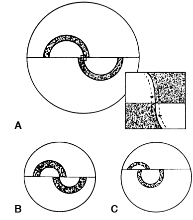
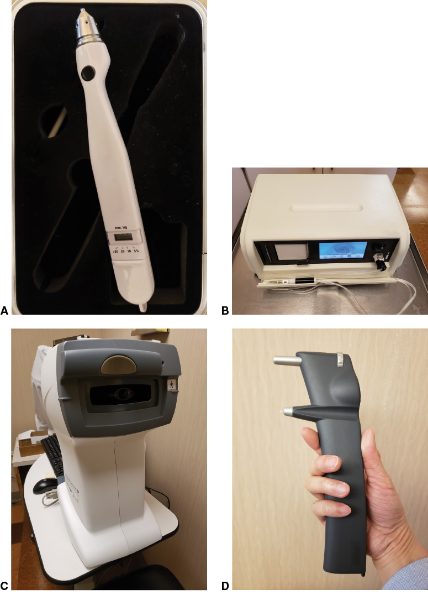

CHAPTER 2
Intraocular Pressure and Aqueous Humor Dynamics
This chapter includes a related video. Go to www.aao.org/bcscvideo_section10 or scan the QR code in the text to access this content.
Highlights
Aqueous Humor Production and Outflow
Aqueous Humor Production
As shown in Figure 1-2 in Chapter 1, aqueous humor is produced by the ciliary processes in the posterior chamber and flows through the pupil into the anterior chamber. The average rate of aqueous humor production is 2–3 µL/min while awake, decreasing by about 50% during sleep. Because the anterior segment volume is approximately 200–300 µL, the eye’s total volume of aqueous humor is turned over about every 100 minutes. The ciliary body contains approximately 80 ciliary processes, each of which is composed of a double layer of epithelium over a core of stroma and a rich supply of fenestrated capillaries (Fig 2-1). These capillaries are supplied mainly by branches of the major arterial circle of the iris. The apical surfaces of both the outer pigmented and the inner nonpigmented layers of epithelium face each other and are joined by tight junctions, which are an important component of the blood–aqueous barrier. The inner nonpigmented epithelial cells, which protrude into the posterior chamber, contain numerous mitochondria and microvilli; these cells are thought to be the site of aqueous production. The ciliary processes provide a large surface area for secretion.
Aqueous humor enters the posterior chamber by the following physiologic mechanisms:
Active secretion refers to transport that requires energy to move sodium, chloride, bicarbonate, and other ions (currently unknown) against an electrochemical gradient. Active secretion is independent of pressure and accounts for the majority of aqueous humor production. It involves, at least in part, activity of the enzyme carbonic anhydrase II. Ultrafiltration refers to a pressure-dependent movement along a pressure gradient. In the ciliary processes, the hydrostatic pressure difference between capillary pressure and IOP favors fluid movement into the eye, whereas the oncotic gradient between the two resists fluid movement. The relationship between secretion and ultrafiltration is not known. Diffusion involves the passive movement of ions, based on charge and concentration, across a membrane.
In humans, aqueous humor has a higher concentration of hydrogen and chloride ions, a higher concentration of ascorbate, and a lower concentration of bicarbonate compared with plasma. In the normal eye, the blood–aqueous barrier keeps the aqueous humor essentially protein-free (1/200–1/500 of the protein found in plasma), allowing for optical clarity. Albumin accounts for approximately half of the total protein. Other components of aqueous humor include growth factors; several enzymes such as carbonic anhydrase, lysozyme, diamine oxidase, plasminogen activator, dopamine β-hydroxylase, and phospholipase A2; and prostaglandins, cyclic adenosine monophosphate (cAMP), catecholamines, steroid hormones, and hyaluronic acid. The composition of the aqueous humor is altered as it flows from the posterior chamber, through the pupil, and into the anterior chamber. This alteration occurs across the hyaloid face of the vitreous, the surface of the lens, the blood vessels of the iris, and the corneal endothelium; and it is secondary to other dilutional exchanges and active processes. See BCSC Section 2, Fundamentals and Principles of Ophthalmology, for further discussion of aqueous humor composition and production.
Suppression of Aqueous Humor Formation
Various classes of drugs can suppress formation of aqueous humor. The mechanisms of action of these drugs are discussed in Chapter 12.
Inhibition of the enzyme carbonic anhydrase suppresses aqueous humor formation. However, the precise role of carbonic anhydrase has been debated vigorously. Its function may be to provide the bicarbonate ion, which, evidence suggests, is actively secreted in human eyes. Carbonic anhydrase may also provide bicarbonate or hydrogen ions for an intracellular buffering system.
Blockade of β2-receptors, the most prevalent adrenergic receptors in the ciliary epithelium, may reduce aqueous humor formation and affect active secretion by causing a decrease either in the efficiency of Na+,K+-ATPase or in the number of pump sites. For additional discussion of the sodium-potassium pump and the pump–leak mechanism, see BCSC Section 2, Fundamentals and Principles of Ophthalmology. Stimulation of 2-receptors also reduces aqueous humor formation, possibly by means of a decrease in ciliary body blood flow mediated through inhibition of cAMP; the exact mechanism is unclear.
Aqueous Humor Outflow
Aqueous humor outflow occurs by 2 major mechanisms: (1) the pressure-sensitive trabecular (or conventional) pathway and (2) the pressure-insensitive uveoscleral (or unconventional) pathway.
Trabecular outflow
Aqueous humor exiting the eye through the trabecular pathway first crosses the trabecular meshwork, enters the Schlemm canal, passes through collector channels in the outer wall of the Schlemm canal, which drain either directly into aqueous veins or into the vessels of the intrascleral plexus, which then drain into aqueous veins. From there, aqueous humor returns to the systemic circulation via the episcleral venous system, which connects to the anterior ciliary and superior ophthalmic veins, ultimately draining into the cavernous sinus.
The trabecular meshwork is classically divided into 3 layers: (1) uveal, (2) corneoscleral, and (3) juxtacanalicular (Fig 2-2). The uveal trabecular meshwork is adjacent to the anterior chamber and is arranged in bands that extend from the iris root and the ciliary body to the peripheral cornea. The corneoscleral meshwork consists of sheets of trabeculum that extend from the scleral spur to the lateral wall of the scleral sulcus. The juxtacanalicular meshwork, which is thought to be the major site of outflow resistance, is adjacent to and actually forms the inner wall of the Schlemm canal. Aqueous humor moves both across and between the endothelial cells lining the inner wall of the Schlemm canal.
The trabecular meshwork is composed of multiple layers, each of which consists of a collagenous connective tissue core covered by a continuous endothelial layer. The trabecular meshwork is the site of pressure-sensitive aqueous humor outflow and functions as a 1-way valve, permitting aqueous humor to leave the eye by bulk flow but limiting flow in the other direction, independent of energy. The cells of the trabecular meshwork are phagocytic, and this function may increase in the presence of inflammation and after laser trabeculoplasty.
In most older adults, the trabecular cells contain a large number of pigment granules in their cytoplasm, giving the entire meshwork a pigmented appearance, the degree of which can vary with position in the meshwork and among individuals. There are approximately 200,000–300,000 trabecular cells per eye. With age, the number of trabecular cells decreases, and the basement membrane beneath them thickens, potentially increasing outflow resistance. An interesting effect of all types of laser trabeculoplasty is that it induces division of trabecular cells and causes a change in the production of cytokines and other structurally important elements of the extracellular matrix. The extracellular matrix material is found throughout the dense portions of the trabecular meshwork.
The Schlemm canal is completely lined with an endothelial layer that rests on a discontinuous basement membrane. The canal is a single channel, typically with a diameter of about 200–300 µm, although there is significant variability, and it is traversed by tubules. The exact path of aqueous flow across the inner wall of the Schlemm canal is uncertain. Intracellular and intercellular pores suggest bulk flow, while so-called giant vacuoles that have direct communication with the intertrabecular spaces suggest active transport; however, these vacuoles may be artifacts of tissue preparation and microscopy. The outer wall of the Schlemm canal is formed by a single layer of endothelial cells that do not contain pores.
A complex system of collector channels connects the Schlemm canal to the aqueous veins, which in turn drain into the episcleral veins, forming the distal portion of the trabecular outflow system (Video 2-1). The episcleral veins subsequently drain into the anterior ciliary and superior ophthalmic veins. These, in turn, ultimately drain into the cavernous sinus.
VIDEO 2-1 Aqueous humor flow through the distal outflow system
as seen using fluorescein aqueous angiography.
Courtesy of Alex Huang, MD, PhD.
Go to www.aao.org/bcscvideo_section10 to access all videos in Section 10.
The trabecular outflow pathway is dynamic. With increasing IOP, the cross-sectional area of the Schlemm canal decreases, while the trabecular meshwork expands. Similarly, in the distal outflow system, the amount of aqueous humor flow through individual vessels appears to vary dynamically. The effect of these changes on outflow resistance is unclear.
Johnson M. What controls aqueous humour outflow resistance? Exp Eye Res. 2006;82(4):545–557.
Uveoscleral outflow
In the normal eye, any nontrabecular outflow is termed uveoscleral, or unconventional, outflow. Uveoscleral outflow is also referred to as pressure-insensitive outflow. Although it is pressure insensitive, uveoscleral outflow is bulk flow that depends on a pressure gradient that remains relatively constant with changes in IOP. Various mechanisms are probably involved in uveoscleral outflow, but the predominant one is passage of aqueous humor from the anterior chamber into the interstitial spaces between the ciliary muscle bundles and then into the supraciliary and suprachoroidal spaces. From there, the exact path of the aqueous humor exiting the eye is unclear. It may include passage through the intact sclera or along the nerves and vessels that penetrate it or may involve absorption into the vortex veins. Lymphatic vessels have also been identified in the ciliary body, and aqueous humor drainage through a uveolymphatic pathway has also been proposed.
Johnson M, McLaren JW, Overby DR. Unconventional aqueous humor outflow: a review. Exp Eye Res. 2017;158:94–111.
Aqueous Humor Dynamics
An understanding of aqueous humor dynamics is essential for the evaluation and management of glaucoma. Aqueous humor dynamics involves the measurement of parameters that affect IOP. The modified Goldmann equation is a mathematical model of the relationship between IOP and the parameters that contribute to its level in the eye at steady state:
P0 = (F − U)/C + Pv
where P0 is the IOP in mm Hg, F is the rate of aqueous humor production in microliters per minute (µL/min), U is the rate of aqueous humor drainage through the pressure-insensitive uveoscleral pathway in microliters per minute (µL/min), C is the facility of outflow through the pressure-sensitive trabecular pathway in microliters per minute per mm Hg (µL/min/mm Hg), and Pv is the episcleral venous pressure in mm Hg. Although there are 5 parameters in the equation, only 4 need to be measured—the fifth parameter can then be calculated. Resistance to outflow (R) is the inverse of facility (C). Figure 2-3 illustrates the effect of reduced outflow facility (C) on IOP.
Measurement of Aqueous Humor Production
The rate of aqueous humor production by the ciliary processes cannot be measured noninvasively, but it is assumed to be equal to the aqueous humor outflow rate in an eye at steady state. The most common method used to measure the rate of aqueous humor outflow is fluorophotometry. For this test, fluorescein is administered topically, its gradual dilution in the anterior chamber is measured optically, and the change in fluorescein concentration over time is then used to calculate aqueous flow. As previously noted, the normal flow rate is approximately 2–3 µL/min while awake, and the aqueous volume is turned over at a rate of approximately 1% per minute.
The rate of aqueous humor formation varies diurnally and is reduced by approximately half during sleep. It also decreases with age. The rate is affected by a variety of factors, including the following:
Aqueous humor production may decrease after trauma or intraocular inflammation and after the administration of certain systemic drugs (eg, general anesthetics and some systemic hypotensive agents), as well as aqueous humor suppressants used for treatment of glaucoma. Carotid occlusive disease may also decrease aqueous humor production.
Brubaker RF. Flow of aqueous humor in humans [The Friedenwald Lecture]. Invest Ophthalmol Vis Sci. 1991;32(13):3145–3166.
Measurement of Outflow Facility
The facility of outflow (C in the Goldmann equation) is the mathematical inverse of outflow resistance and varies widely in normal eyes, with a mean ranging from 0.22 to 0.30 µL/min/mm Hg. Outflow facility decreases with age and is affected by surgery, trauma, medications, and endocrine factors. Patients with glaucoma and elevated IOP typically have decreased outflow facility. In normal eyes, approximately 50% of conventional outflow resistance is in the trabecular meshwork, while the remainder is in the distal outflow system. However, in primary open-angle glaucoma with elevated IOP or ocular hypertension, most of the pathologic change occurs in the juxtacanalicular tissue of the trabecular meshwork and inner wall of the Schlemm canal.
Tonography is a method used to measure the facility of aqueous humor outflow. In this technique, a weighted Schiøtz tonometer or pneumatonometer is placed on the cornea, acutely elevating the IOP. Outflow facility in µL/min/mm Hg can be computed from the rate at which the pressure declines with time, reflecting the ease with which aqueous humor leaves the eye.
However, tonography depends on a number of assumptions (eg, ocular rigidity, stability of aqueous humor formation, and constancy of ocular blood volume) and is subject to many sources of error, such as poor patient fixation and eyelid squeezing. These problems reduce the accuracy and reproducibility of tonography for an individual patient. In general, tonography is best employed as a research tool and is rarely used clinically.
Kazemi A, McLaren JW, Lin SC, et al. Comparison of aqueous outflow facility measurement by pneumatonography and digital Schiøtz tonography. Invest Ophthalmol Vis Sci. 2017;58(1):204–210.
Rosenquist R, Epstein D, Melamed S, Johnson M, Grant WM. Outflow resistance of enucleated human eyes at two different perfusion pressures and different extents of trabeculotomy. Curr Eye Res. 1989;8(12):1233–1240.
Vahabikashi A, Gelman A, Dong B, et al. Increased stiffness and flow resistance of the inner wall of Schlemm’s canal in glaucomatous human eyes [epub ahead of print December 5, 2019]. Proc Natl Acad Sci USA. doi: 10.1073/pnas.1911837116
Measurement of Episcleral Venous Pressure
The episcleral veins are the ultimate destination for aqueous humor draining through the trabecular pathway. Thus, the pressure in these veins, the episcleral venous pressure (EVP), represents the lowest possible IOP in an intact eye with normal aqueous humor production. It is a dynamic parameter that varies with alterations in body position and systemic blood pressure. EVP is often increased in syndromes with facial hemangiomas (eg, Sturge-Weber), carotid-cavernous sinus fistulas, and cavernous sinus thrombosis; and it may be partially responsible for the elevated IOP seen in thyroid eye disease. EVP may also be altered by some medications, including topical Rho kinase inhibitors.
EVP can be measured noninvasively by venomanometry, in which a transparent flexible membrane is placed against the sclera and the pressure is slowly increased. The pressure that begins to collapse an episcleral vein corresponds to EVP; however, visualizing this endpoint can be difficult. The use of automated pressure measurements, video recording of the vein collapse, and image analysis software can help to precisely identify the endpoint and associated EVP. The usual range of values is 6–9 mm Hg, but higher values have been reported when different endpoints and measurement techniques are used. According to the Goldmann equation, IOP acutely rises approximately 1 mm Hg for every 1 mm Hg increase in EVP. However, elevation of EVP can cause reflux of blood into the Schlemm canal, altering the normal outflow of aqueous humor. As a result, the change in IOP may be greater or less than that predicted by the Goldmann equation.
Sit AJ, McLaren JW. Measurement of episcleral venous pressure. Exp Eye Res. 2011;
93(3):291–298.
Measurement of Uveoscleral Outflow Rate
Uveoscleral outflow rate cannot be measured noninvasively and, therefore, is usually calculated from the Goldmann equation after determination of the other parameters. There is evidence that outflow via the uveoscleral pathway is significant in human eyes, accounting for up to 45% of total aqueous outflow, although invasive studies using tracers tend to report lower values. Some studies indicate that uveoscleral outflow decreases with age and is reduced in patients with glaucoma. It is increased by cycloplegia, adrenergic agents, and prostaglandin F2 analogues but decreased by miotics. It is also increased by suprachoroidal stents and by cyclodialysis clefts.
Bill A, Phillips CI. Uveoscleral drainage of aqueous humour in human eyes. Exp Eye Res. 1971;12(3):275–281.
Brubaker RF. Measurement of uveoscleral outflow in humans. J Glaucoma. 2001;10(5 Suppl 1):
S45–S48.
Intraocular Pressure
IOP Distribution and Relation to Glaucoma
Pooled data from large epidemiologic studies indicate that the mean IOP in the general population of European ancestry is approximately 15.5 mm Hg, with a standard deviation of 2.6 mm Hg. IOP has a non-Gaussian distribution with a skew toward higher pressures, especially in individuals older than 40 years (Fig 2-4). IOP is also genetically influenced. The value 21 mm Hg (2 standard deviations above the mean) was traditionally used both to separate normal from abnormal pressures and to define which patients required ocular hypotensive therapy. However, it is now understood that glaucoma is a multifactorial disease process for which IOP is an important risk factor. Many patients with glaucoma consistently have IOPs ≤ 21 mm Hg, and most individuals with IOP >21 mm Hg do not develop glaucoma. Further, the cutoff value of 21 mm Hg is statistically flawed, given the non-Gaussian distribution of IOP values in the population. Consequently, screening for glaucoma based solely on the criterion of IOP >21 mm Hg misses up to half of the people with glaucoma and optic nerve damage in the screened population.
General agreement has been reached that, for the population as a whole, there is no clear level below which IOP can be considered “normal” or safe and above which IOP can be considered “elevated” or unsafe. IOP is a continuous risk factor across its entire range: the higher the IOP, the greater the risk for glaucoma. Although other risk factors affect an individual’s susceptibility to glaucoma, all current treatments are designed to reduce IOP.
Sommer A, Tielsch JM, Katz J, et al. Relationship between intraocular pressure and primary open-angle glaucoma among white and black Americans. The Baltimore Eye Survey. Arch Ophthalmol. 1991;109(8):1090–1095.
Variations in IOP
Intraocular pressure varies with a number of factors, including the time of day (see the section “Circadian variation”), heartbeat, respiration, exercise, fluid intake, systemic medications, and topical medications (Table 2-1).
Body position has a significant effect on IOP, and the lowest IOP measurements are obtained when a person is seated with the neck in neutral position. IOP is higher when an individual is recumbent rather than upright, predominantly because of an increase in the EVP. Some people have an exaggerated rise in IOP when recumbent; this tendency may be important in the pathogenesis of certain forms of glaucoma. Alcohol consumption causes a transient decrease in IOP. Cannabis also decreases IOP but has not proved clinically useful because of its short duration of action and its side effects. In most studies, caffeine has not been shown to have an appreciable effect on IOP. There is little variation in IOP with age in healthy individuals.
Circadian variation
In individuals without glaucoma, IOP varies by 2–6 mm Hg over a 24-hour period, as aqueous humor production, outflow facility, and uveoscleral outflow rate change. Higher mean IOP is associated with wider fluctuation in pressure. The time at which peak IOP occurs varies among individuals. However, 24-hour IOP measurement performed with individuals in their habitual body positions (standing or sitting during the daytime and supine at night) indicates that most people (with or without glaucoma) have peak pressures during sleep, in the early-morning hours, corresponding with a decrease in aqueous humor production, outflow facility, and uveoscleral outflow. During the waking hours, peak pressure often occurs soon after awakening. In selected patients, measurement of IOP outside office hours may be useful in determining why optic nerve damage continues to occur despite apparently adequately controlled pressure.
Liu JH, Zhang X, Kripke DF, Weinreb RN. Twenty-four-hour intraocular pressure pattern associated with early glaucomatous changes. Invest Ophthalmol Vis Sci. 2003;44(4):1586–1590.
Nau CB, Malihi M, McLaren JW, Hodge DO, Sit AJ. Circadian variation of aqueous humor dynamics in older healthy adults. Invest Ophthalmol Vis Sci. 2013;54(12):7623–7629.
IOP fluctuation and glaucoma
A significant body of literature demonstrates an association between IOP fluctuation and the risk of glaucoma progression. However, the data are largely retrospective, based on post hoc analyses of IOP variations between visits in large clinical trials. IOP fluctuation is also closely correlated with the level of mean IOP and appears to be a more important risk factor in certain groups of patients, including those with low IOP. Surgery results in less IOP fluctuation than medical therapy, but the clinical significance of this finding has not been demonstrated. Moreover, the specific measures of variability that may best predict glaucoma progression are not known, and the technology to effectively measure IOP fluctuation in a short time frame is currently limited.
Caprioli J, Coleman AL. Intraocular pressure fluctuation a risk factor for visual field progression at low intraocular pressures in the Advanced Glaucoma Intervention Study. Ophthalmology. 2008;115(7):1123–1129.
Musch DC, Gillespie BW, Niziol LM, Lichter PR, Varma R; CIGTS Study Group. Intraocular pressure control and long-term visual field loss in the Collaborative Initial Glaucoma Treatment Study. Ophthalmology. 2011;118(9):1766–1773.
Clinical Measurement of IOP
Tonometry is the noninvasive measurement of IOP. Many different methods of tonometry have been developed, and each has advantages and disadvantages. All currently used methods have sources of error, and no device can accurately measure intracameral pressure in all eyes.
Applanation tonometry
Applanation tonometry, the most widely used method, is based on the Imbert-Fick principle, which states that the pressure inside an ideal dry, infinitely thin-walled sphere equals the force necessary to flatten its surface divided by the area of the flattening:
P = F/A
where P = pressure, F = force, and A = area. In applanation tonometry, the cornea is flattened, and IOP is determined by measuring the applanating force and the area flattened.
The Goldmann applanation tonometer (Fig 2-5) measures the force necessary to flatten an area of the cornea 3.06 mm in diameter. At this diameter, the material resistance of the cornea to flattening is counterbalanced by the capillary attraction of the tear film meniscus to the tonometer head. Furthermore, the IOP (in mm Hg) equals the flattening force (in gram-force) multiplied by 10. A split-image prism allows the examiner to determine the flattened area with great accuracy. Topical anesthetic and fluorescein dye are instilled in the tear film to outline the area of flattening. Fluorescein semicircles, or mires, visible through the split-image prism move with the ocular pulse, and the endpoint is reached when the inner edges of the semicircles touch each other at the midpoint of their excursion (Fig 2-6). By properly aligning the mires, the examiner can ensure the appropriate area of corneal applanation to obtain the most accurate IOP reading.
The Perkins tonometer is a counterbalanced applanation tonometer that, like the Goldmann tonometer, uses a split-image prism and requires instillation of fluorescein dye in the tear film. It is portable and can be used with the patient either upright or supine.
Applanation measurements are safe, easy to perform, and relatively accurate in most clinical situations. Of the currently available devices, the Goldmann applanation tonometer is the most widely used in clinical practice and research. Because applanation does not displace much fluid (approximately 0.5 µL) or substantially increase the pressure in the eye, IOP measurement by this method is relatively unaffected by ocular rigidity, compared with indentation tonometry (see the section “Indentation tonometry”).
The accuracy of applanation tonometry can be reduced in certain situations (see Table 2-2, which lists possible sources of error in tonometry). An inadequate amount of fluorescein can lead to poor visualization of the mires and the measurement endpoint, resulting in inaccurate readings. Tear film thickness can also affect accuracy. A common misconception is that a thick tear film leads to erroneous readings because of excessively thick mires, which require greater force to reach the measurement endpoint. However, this is incorrect, as the inner edges of the mires will touch when an area 3.06 mm in diameter is applanated, regardless of the mire thickness. Rather, the error occurs because the surface tension changes with tear film thickness. Because the cornea is curved, an increasing tear film thickness will form a meniscus with a larger radius of curvature, which has a lower surface tension. The low surface tension inadequately counterbalances the corneal resistance, resulting in an artificially high IOP reading. Conversely, a very thin tear film has a small radius of curvature with a high surface tension that exceeds the corneal resistance, yielding a falsely low IOP reading.
Marked corneal astigmatism can also produce inaccuracy, as the fluorescein pattern seen by the clinician through the instrument appears elliptical, and the IOP may be artificially high or low. To obtain an accurate reading in an astigmatic eye, the clinician should rotate the prism so that the red mark on the prism holder is set at the least-curved meridian of the cornea (along the negative axis). Alternatively, 2 pressure readings taken 90° apart can be averaged. Corneal edema predisposes to inaccurately low readings, whereas pressure measurements taken over a corneal scar will be falsely high. Tonometry performed over a soft contact lens gives artificially low values. Central corneal thickness is another factor that can affect the accuracy of tonometry; see the following section.
Whitacre MM, Stein R. Sources of error with use of Goldmann-type tonometers. Surv Ophthalmol. 1993;38(1):1–30.
Tonometry and central corneal thickness
Measurements obtained with the most common types of tonometers are affected by central corneal thickness (CCT). Goldmann tonometer readings are most accurate when the CCT is 520 µm. Thicker corneas resist the deformation inherent in most methods of tonometry, resulting in an overestimation of IOP, while thinner corneas may give an artificially low reading. IOP may also be underestimated after laser or other types of keratorefractive surgery if these procedures resulted in a CCT significantly less than that assumed for Goldmann tonometry.
The relationship between measured IOP and CCT is not linear, so correction factors are only estimates at best. In addition, the biomechanical properties of individual corneas may vary, and the stiffness or elasticity of the cornea may affect IOP measurement. Currently, there is no validated correction factor for the effect of CCT on applanation tonometers; therefore, the correction methods proposed in the literature are not applicable to clinical use. A thin central cornea is a known risk factor for progression from ocular hypertension to glaucoma. However, it has not been determined whether this increased risk of glaucoma is attributable only to underestimation of IOP or whether a thin central cornea is a biomarker for another risk factor independent of IOP measurement (see Chapter 4).
Gordon MO, Beiser JA, Brandt JA, et al. The Ocular Hypertension Treatment Study: baseline factors that predict the onset of primary open-angle glaucoma. Arch Ophthalmol. 2002;
120(6):714–720.
Mackay-Marg–type tonometers
Mackay-Marg–type tonometers use an annular ring to gently flatten a small area of the cornea. As the area of flattening increases, the pressure in the center of the ring increases as well and is measured with a transducer. The IOP is equivalent to the pressure when the center of the ring is just covered by the flattened cornea.
Portable electronic devices of the Mackay-Marg type (eg, Tono-Pen, Reichert Technologies; Fig 2-7A) contain a strain gauge to measure the pressure at the center of an annular ring placed on the cornea. The instrument tip is tapped against the surface of the cornea, obtaining several measurements that are then used by the device to provide an IOP measurement along with the coefficient of variation. These devices are particularly useful in patients with corneal scars or edema, as the measurement tip is small enough to be applied only on areas of normal cornea. It also can be used to obtain measurements regardless of the patient’s body position. However, some studies suggest that the Tono-Pen tends to overestimate low IOPs and underestimate high IOPs.
Eisenberg DL, Sherman BG, McKeown CA, Schuman JS. Tonometry in adults and children. A manometric evaluation of pneumatonometry, applanation, and TonoPen in vitro and in vivo. Ophthalmology. 1998;105(7):1173–1181.
Mackay RS, Marg E. Fast, automatic, electronic tonometers based on an exact theory. Acta Ophthalmol (Copenh). 1959;37:495–507.
Pneumatonometer
The pneumatic tonometer, or pneumatonometer, is an applanation tonometer that shares some characteristics with the Mackay-Marg–type devices (Fig 2-7B). It has a cylindrical air-filled chamber and a probe tip covered with a flexible, inert silicone elastomer (Silastic membrane) diaphragm. Because of the constant flow of air through the chamber, there is a small gap between the diaphragm and the probe edge. As the probe tip touches and applanates the cornea, the air pressure increases until this gap is completely closed, at which point the IOP is equivalent to the air pressure. Similar to the Tono-Pen, this instrument makes contact with only a small area of the cornea and is especially useful in eyes with corneal scars or edema and can be used with the patient in sitting, lateral decubitus, or supine body positions. In addition, measurements obtained by placing the probe on the sclera appear to correlate well with those obtained with the probe placed on the cornea, suggesting that it can be used to monitor IOP in patients with keratoprostheses. The pneumatonometer can also record IOP continuously while the probe is on the eye and can be used for tonography.
Durham DG, Bigliano RP, Masino JA. Pneumatic applanation tonometer. Trans Am Acad Ophthalmol Otolaryngol. 1965;69(6):1029–1047.
Kapamajian MA, de la Cruz J, Hallak JA, Vajaranant TS. Correlation between corneal and scleral pneumatonometry: an alternative method for intraocular pressure measurement. Am J Ophthalmol. 2013;156(5):902–906.e1.
Noncontact tonometers
Noncontact (air-puff) tonometers determine IOP by measuring the force of air required to indent and flatten the cornea, thereby avoiding contact with the eye. IOP is measured when the amount of corneal indentation corresponds with the maximum amount of light reflection from the cornea. Readings obtained with these instruments vary widely, and IOP is often overestimated. Noncontact tonometers are often used in large-scale glaucoma-screening programs or by nonmedical health care providers.
The Ocular Response Analyzer (ORA; Reichert Technologies; Fig 2-7C) is a type of noncontact tonometer that uses correction algorithms so that its IOP readings more closely match those obtained with applanation techniques, and the effect of corneal biomechanical properties on pressure measurement is reduced. One study reported that the corneal compensated IOP (IOPcc) has a stronger correlation with glaucoma progression than does IOP measured with Goldmann or rebound tonometry. In addition, indicators of ocular biomechanical properties are calculated, including corneal hysteresis. During the measurement process, the cornea is indented beyond the IOP measurement point. Corneal hysteresis is the difference between IOP measured during the initial corneal indentation and IOP measured during corneal rebound. Reduced corneal hysteresis has been associated with an increased risk of developing visual field defects in glaucoma suspects and with disease progression in patients with confirmed glaucoma.
Medeiros FA, Meira-Freitas D, Lisboa R, Kuang TM, Zangwill LM, Weinreb RN. Corneal hysteresis as a risk factor for glaucoma progression: a prospective longitudinal study. Ophthalmology. 2013;120(8):1533–1540.
Susanna BN, Ogata NG, Daga FB, Susanna CN, Diniz-Filho A, Medeiros FA. Association between rates of visual field progression and intraocular pressure measurements obtained by different tonometers. Ophthalmology. 2019;126(1):49–54.
Susanna CN, Diniz-Filho A, Daga FB, et al. A prospective longitudinal study to investigate corneal hysteresis as a risk factor for predicting development of glaucoma. Am J Ophthalmol. 2018;187:148–152.
Rebound tonometers
Rebound tonometry determines IOP by measuring the speed at which a small probe propelled against the cornea decelerates and rebounds after impact (Fig 2-7D). Rebound tonometers are portable, and topical anesthesia is not required; these characteristics make them particularly suitable for use in pediatric populations and for home tonometry in some patients. However, rebound tonometry is strongly influenced by central corneal thickness, even when compared with applanation tonometry. Thus, care must be taken in the interpretation of IOP measurements in eyes with thick or thin corneas.
Kontiola AI. A new induction-based impact method for measuring intraocular pressure. Acta Ophthalmol Scand. 2000;78(2):142–145.
Rao A, Kumar M, Prakash B, Varshney G. Relationship of central corneal thickness and intraocular pressure by iCare rebound tonometer. J Glaucoma. 2014;23(6):380–384.
Dynamic contour tonometer
The dynamic contour tonometer, a newer type of nonapplanation contact tonometer, is based on the principle that when the surface of the cornea is aligned with the surface of the instrument tip, the pressure in the tear film between these surfaces is equal to the IOP and can be measured by a pressure transducer. The tip is similar in shape and size to an applanation tonometer tip, with a pressure transducer placed in the center, and enables measurement of ocular pulse amplitude in addition to IOP. Evidence suggests that IOP measurements obtained with dynamic contour tonometry may be more independent of corneal biomechanical properties and thickness than those obtained with applanation.
Schneider E, Grehn F. Intraocular pressure measurement-comparison of dynamic contour tonometry and Goldmann applanation tonometry. J Glaucoma. 2006;15(1):2–6.
Indentation tonometry
Schiøtz tonometry determines IOP by measuring the amount of corneal indentation produced by a known weight. Measurements are taken with the patient supine, and the amount of indentation is read on a linear scale on the instrument and converted to IOP by a calibration table. However, indentation of the cornea results in a significant volume change in the globe, the amount of which depends on the IOP and the ocular rigidity. The assumption of average ocular rigidity in the calibration tables makes the accuracy of Schiøtz tonometry highly dependent on ocular biomechanical properties. Although Schiøtz tonometry is now rarely used in the developed world, it remains the only form of tonometry that does not require electrical power.
Tactile tension
It is possible to estimate IOP by digital pressure on the globe, referred to as tactile tension. This test may be useful in uncooperative patients; however, the results may be inaccurate even when the test is performed by very experienced clinicians. In general, tactile tensions are useful only for detecting large differences in IOP between a patient’s 2 eyes.
Infection control in clinical tonometry
Many infectious agents—including HIV, hepatitis C virus, and adenovirus—can be recovered from tears. Tonometers must be cleaned after each use to prevent the transfer of such pathogens. For Goldmann-type and Perkins tonometers, the tonometer tips (prisms) should be cleaned immediately after use. The ideal method for disinfection is controversial. Sodium hypochlorite (dilute bleach) offers effective disinfection against adenovirus and herpes simplex virus, the viruses commonly associated with nosocomial outbreaks in eye care. In contrast, alcohol wipes or soaks do not appear to be effective at eradicating all infectious virions. The efficacy of other disinfection protocols has not been adequately evaluated. The prism head should be rinsed with water and dried before reuse to prevent damage to the corneal epithelium. Single-use disposable applanation tonometer tips may be a useful alternative to cleaning. For cleaning other tonometers, refer to the manufacturer’s recommendations.
Junk AK, Chen PP, Lin SC, et al. Disinfection of tonometers: a report by the American Academy of Ophthalmology. Ophthalmology. 2017;124(12):1867–1875.

(Continued)
Figure 2-1 (continued) Anatomic details of the anterior chamber angle and ciliary body. A, The 2 layers of the ciliary epithelium, showing apical surfaces in apposition to each other. Basement membrane (BM) lines the double layer and constitutes the internal limiting membrane (ILM) on the inner surface. The nonpigmented epithelium is characterized by large numbers of mitochondria (M), zonula occludens (ZO), and lateral and surface interdigitations (I). The pigmented epithelium contains numerous melanin granules (MG). Additional intercellular junctions include desmosomes (D) and gap junctions (GJ). B, Light micrograph of the anterior chamber angle shows the Schlemm canal (black arrow), adjacent to the trabecular meshwork in the sclera. One of the external collector vessels can be seen (red arrow) adjacent to the Schlemm canal. C, Pars plicata of the ciliary body showing the 2 epithelial layers in the eye of an older person. The nonpigmented epithelial cells measure approximately 20 µm high by 12 µm wide. The cuboidal pigmented epithelial cells are approximately 10 µm high. The thickened ILM (a) is laminated and vesicular; such thickened membranes are characteristic of older eyes. The cytoplasm of the nonpigmented epithelium is characterized by its numerous mitochondria (b) and the cisternae of the rough-surfaced endoplasmic reticulum (c). A poorly developed Golgi apparatus (d) and several lysosomes and residual bodies (e) are shown. The pigmented epithelium contains many melanin granules, measuring about 1 µm in diameter, located mainly in the apical portion. The basal surface is irregular, with many fingerlike processes (f). The basement membrane of the pigmented epithelium (g) and a smooth granular material containing vesicles (h) and coarse granular particles are seen at the bottom of the figure. The appearance of the basement membrane is typical of older eyes and can be discerned with the light microscope (×5700). (Part A reproduced with permission from Shields MB. Textbook of Glaucoma. 3rd ed. Williams & Wilkins; 1992. Part B courtesy of Nasreen A. Syed, MD. Part C modified with permission from Hogan MJ, Alvarado JA, Weddell JE. Histology of the Human Eye. Saunders; 1971:283.)

Figure 2-2 Trabecular meshwork and Schlemm canal. A, Three layers of the trabecular meshwork (TM; shown in cutaway views): uveal, corneoscleral, and juxtacanalicular. B, Anterior segment optical coherence tomography image of the TM and Schlemm canal. (Part A modified with permission from Shields MB. Textbook of Glaucoma. 3rd ed. Williams & Wilkins; 1992; part B courtesy of Syril K. Dorairaj, MD.)

Figure 2-3 The effect of outflow facility on intraocular pressure (IOP), based on the modified Goldmann equation (assuming a constant aqueous humor production rate of 2.5 µL/min, uveoscleral outflow rate of 35%, and episcleral venous pressure of 7 mm Hg). (Courtesy of Arthur J. Sit, MD.)

Figure 2-4 Frequency distribution of IOP: 5220 eyes in the Framingham Eye Study. (Modified from Colton T, Ederer F. The distribution of intraocular pressures in the general population. Surv Ophthalmol. 1980;25[3]:123–129.)
|
Table 2-1 Factors That Affect Intraocular Pressure |
|
|
Factors that may increase intraocular pressure |
|
|
Elevated episcleral venous pressure |
|
|
Bending over or being in a supine position |
|
|
Breath holding |
|
|
Elevated central venous pressure |
|
|
Intubation |
|
|
Orbital venous outflow obstruction |
|
|
Playing a wind instrument |
|
|
Valsalva maneuver |
|
|
Wearing a tight collar or tight necktie |
|
|
Pressure on the eye |
|
|
Blepharospasm |
|
|
Eyelid squeezing and crying, especially in young children |
|
|
Elevated body temperature (associated with increased aqueous humor production) |
|
|
Hormonal influences |
|
|
Hypothyroidism |
|
|
Thyroid eye disease |
|
|
Drugs unrelated to glaucoma therapy |
|
|
Anticholinergics: may precipitate angle closure |
|
|
Corticosteroids |
|
|
Ketamine |
|
|
Lysergic acid diethylamide (LSD) |
|
|
Topiramate |
|
|
Factors that may decrease intraocular pressure |
|
|
Aerobic exercise |
|
|
Anesthetic drugs |
|
|
Depolarizing muscle relaxants such as succinylcholine |
|
|
Metabolic or respiratory acidosis (decreases aqueous humor production) |
|
|
Hormonal influences |
|
|
Pregnancy |
|
|
Drugs unrelated to glaucoma therapy |
|
|
Alcohol |
|
|
Heroin |
|
|
Marijuana (cannabis) |
|
|
Ketamine |
|

Figure 2-5 Goldmann-type applanation tonometry. A, Basic features of the tonometer, shown in contact with the patient’s cornea. B, The enlargement shows the tear film meniscus created by contact of the split-image prism and cornea. C, The view through the split-image prism (1) reveals a circular meniscus (2), which is converted into 2 semicircles (3) by the prisms. (Redrawn with permission from Shields MB. Textbook of Glaucoma. 3rd ed. Williams & Wilkins; 1992.)

Figure 2-6 Mires viewed through the split-image prism of the Goldmann-type applanation tonometer. A, Proper width and position. The enlargement depicts excursions of the mires, which are caused by ocular pulsations. B, The mires are too wide. C, Improper vertical and horizontal alignment. (Reproduced with permission from Shields MB. Textbook of Glaucoma. 3rd ed. Williams & Wilkins; 1992.)
|
Table 2-2 Possible Sources of Error in Tonometry |
||
|
Factors That May Cause Artificially Low IOP |
Factors That May Cause Artificially High IOP |
|
|
Corneal biomechanical properties (eg, rigidity) |
Breath holding or Valsalva maneuver |
|
|
Corneal edema |
Corneal biomechanical properties (eg, rigidity) |
|
|
Corneal irregularity (eg, ectasia) |
Corneal irregularity (eg, ectasia) |
|
|
High corneal astigmatism |
Corneal scarring or band keratopathy |
|
|
Inaccurately calibrated tonometer |
Excessively thick tear film |
|
|
Inadequate amount of fluorescein in tear |
Extraocular muscle force applied to a restricted globe |
|
|
Measurement done over a soft contact lens |
High corneal astigmatism |
|
|
Technician errors |
Inaccurately calibrated tonometer |
|
|
Thin central cornea |
Obesity or straining to reach slit lamp |
|
|
Pressure on the globe |
||
|
Squeezing of the eyelids |
||
|
Technician errors |
||
|
Thick central cornea |
||
|
Tight collar or tight necktie |
||
|
IOP = intraocular pressure. |
||

Figure 2-7 Nonapplanation tonometers in common use offer advantages and disadvantages compared with Goldmann applanation tonometry. A, Tono-Pen. B, Pneumatonometer. C, Ocular Response Analyzer. D, Rebound tonometer. (Courtesy of Arthur J. Sit, MD.)